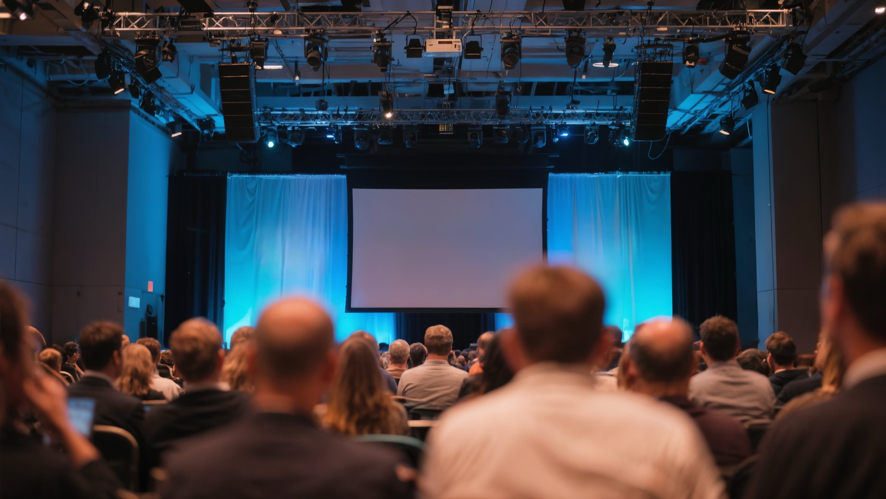

Programa
Dois dias, quatro palcos, dezenas de sessões. Keynotes, painéis, workshops e pitch de startups — a agenda completa da 1ª edição, em Matosinhos.
Credenciação & Welcome Coffee
Abertura institucional
Boas-vindas da organização e da Câmara Municipal de Matosinhos. O arranque oficial da primeira Cimeira ibérica da bicicleta.
 Marta Oliveira· C. M. Matosinhos
Marta Oliveira· C. M. MatosinhosA bicicleta no centro da cidade
Como Copenhaga transformou décadas de política ciclável em qualidade de vida — e que lições podemos trazer para a Península Ibérica.
 Lars Eriksson· Head of Cycling Cities, Copenhaga
Lars Eriksson· Head of Cycling Cities, CopenhagaMobilidade Urbana & Cidades Humanas
Ruas, ciclovias e espaço público desenhados para as pessoas. Um debate entre autarquias, urbanistas e comunidade.
 Chiara Bellini· Urban Designer, Milão
Chiara Bellini· Urban Designer, MilãoNetworking Break
Políticas Públicas & Governança
Legislação, financiamento europeu e cooperação público-privada: decidir hoje as cidades de amanhã.
 Isabel Furtado· Federação de Mobilidade Ciclável
Isabel Furtado· Federação de Mobilidade CiclávelAlmoço & B2B Meetings
Agenda de reuniões B2B para participantes com Passe PRO.
Sustentabilidade & Transição Verde
O contributo real da bicicleta para a descarbonização e a economia circular, com dados e casos concretos.
Planear uma ciclovia, do zero à obra
Sessão prática de planeamento de infraestrutura ciclável para técnicos municipais e projetistas. Vagas limitadas.
Coffee Break
Desporto & Competição: uma paixão comum
Do ciclismo profissional às provas populares, como o desporto move comunidade, turismo e economia.
 Tiago Sousa· Associação Bicicleta PT
Tiago Sousa· Associação Bicicleta PTKeynote internacional de encerramento
A grande conferência de fecho do primeiro dia. Orador a anunciar.
Welcome Drink & After Party
O fecho do dia 1, onde as conversas continuam.
Welcome Coffee
Inovação, Tecnologia & E-Bikes
O futuro da bicicleta é agora: micromobilidade elétrica, dados e integração com cidades inteligentes.
 João Mendonça· CEO, VeloMobility Labs
João Mendonça· CEO, VeloMobility LabsO futuro da micromobilidade
Bicicletas partilhadas, novos serviços e regulação: como escalar a micromobilidade nas cidades ibéricas.
Networking Break
Economia da Bicicleta & Indústria
Portugal, maior produtor de bicicletas da UE. Como reforçar a fileira — da indústria ao retalho e ao turismo.
 Ricardo Nogueira· U.Porto Mobilidade
Ricardo Nogueira· U.Porto MobilidadeAlmoço & Expo
Visite a zona de exposição, test-rides e demonstrações.
Pitch de Startups — Final
As startups finalistas apresentam as suas soluções de mobilidade perante o júri e os investidores.
 Sofia Antunes· Fundadora, PedalX Mobility
Sofia Antunes· Fundadora, PedalX MobilityWorkshops paralelos: E-Bike, dados & negócio
Três sessões práticas em simultâneo: manutenção de e-bikes, dados de mobilidade e modelos de negócio.
Coffee Break
Saúde, Bem-Estar & Estilo de Vida
O impacto da mobilidade ativa na saúde pública, na qualidade de vida e na inclusão social.
Encerramento & Prémio de Inovação
Conclusões da 1ª edição e entrega do Prémio de Inovação da Bikes Summit à startup vencedora.
Sunset Party
Pôr-do-sol à beira-mar de Matosinhos para fechar a Cimeira.
Sem sessões neste espaço para o dia selecionado. Experimente outro filtro.
Programa preliminar sujeito a alterações. Oradores e horários confirmados serão atualizados até à data do evento.